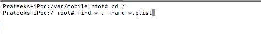
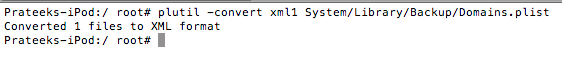

In this article, we will be looking at the IOS filesystem, understand how the directories are organized, look at some important files, and look at how we can extract data from database and plist files. We will look at how applications store their data in their specific directories (sandbox) and how we can extract them.
One of the important things to note is that in all the previous articles, we have been logging in to the device as the user root. There is another kind of user with the username mobile. A mobile user has less privileges than a root user. All the applications run with the user mobile, with the exception of Cydia and some other applications which run with root privileges. Some of Apple’s internal daemons or services also run with root privileges. A quick ps aux will make this very clear. On the extreme left, you will see the USER column. We can see that Cydia runs with root privileges, whereas all other applications run with mobile user, for e.g /Applications/AppStore.app/AppStore while some of the daemons for e.g /usr/sbin/wifid run with root privileges. Some other applications that you install via Cydia may also run with root privileges. By default, once you jailbreak the device, the password for both root and mobile user is alpine.
Click to Enlarge
It is possible for you to configure an app to run with root privileges. For more details on it, check out this answer on Stack Overflow.
Let’s ssh into the device. Go to /Applications. You can see some apps in this folder. Most of them are apps that come preinstalled with IOS, and then there are some apps installed via Cydia, for e.g the Terminal app. Please note that all the apps running inside /Applications folder don’t run in a sandboxed environment whereas all the applications in the location /var/mobile/Applications run in a sandboxed environment. We will discuss sandboxing later in this article. However, they still run with the user mobile by default unless specifically configured to run with the user root.
Click to Enlarge
All the apps downloaded from the App Store go inside the /var/mobile/Applications/directory. It also contains the apps that you installed using installipa or an external source like Cydia. All these apps run in a sandboxed environment.
Click to Enlarge
Please note that from IOS 4 or later, every app resides in an environment called Sandbox. The main purpose of this is to ensure that the app is not allowed to access any data outside of its own sandbox. This ensures better security. It is however possible to access certain portions of the user data from within an application using proper permissions. This includes permission to fetch the user’s Contacts, photos etc. However, there has been certain debate about this as well. For e.g from IOS 6, an app can get access to a user’s contacts after taking proper permission from the user. Prior to this, an app could access a user’s contacts without taking any permission from the user and it caused quite a controversy for the Path app.
It is also possible to access many other things outside of an app’s sandbox using Entitlements. You can read the complete documentation here. For e.g, to access read write permissions to the calendar of a user, the entitlements key com.apple.security.personal-information.calendars has to be marked as YES in the .entitlements file.
Let’s look at the directory structure of a particular application. Let’s go inside the Snapchat app directory. This directory structure is common for all apps.
Click to Enlarge
- The Snapchat.app (Appname.app) folder contains all the assets (images), plist files and the binary for the app.
- The Documents folder is to used to store any file. This provides a seperate directory to this application folder that could only be used within the context of this application. Here is a line taken from Apple’s documentation
Put user data in the /Documents/. User data is any data that cannot be recreated by your app, such as user documents and other user-generated content. - tmp folder is used for putting temporary user data. The application developer should be responsible for freeing up the memory occupied by the files in this folder.
- The Library folder can be used to keep files that are not essentially user data files.
You can find more information here. Here is a screenshot from Apple’s documentation.
Click to Enlarge
Gathering information from database files.
Apple uses sqlite databases to store a lot of its information. These databases usually have the extension .db or .sqlitedb. Many features for developers such as Core Data, NSUserDefaults etc operate from these sqlite databases on a low level. These database files can be used to extract a lot of information for a particular application or from the operating system in general. This could include call history, or stored mails from within an application etc. To find all the .db files, use the command find . -name *.db

Click to Enlarge
This gives you a list of all the database files stored within the device. Let’s take a look at some of the important database files.
I have the gmail app installed on my device. This file looks of interest to me.
Click to Enlarge
It looks like this file contains some important information. Let’s analyze this file using the sqlite client. Please note that you will need to install the sqlite client named sqlite3 on your device first. Let’s open this file using the command sqlite3 file_name.
You will notice that you get a sqlite interpreter. Let’s turn the headers on so that we can see the headers of all column values. You can then use the command .tables to have a look at all the tables for this database.
Click to Enlarge
Some of the tables that look interesting are cached_contacts, cached_queries and cached_messages. Let’s dump out all the information from the table cached_messages

Click to Enlarge
As we can see, it dumps out all the cached emails.
Similarly, we can dump out all the SMS database from the device which is found on the location /private/var/mobile/Library/SMS. In this dump, you can see a message with the text Test message for ios security tutorial.
Click to Enlarge
Another example could be the contacts database. It could be found at the location /var/mobile/Library/AddressBook
Click to Enlarge
And you can find the call history at the location /private/var/wireless/Library/CallHistory
Click to Enlarge
Sometimes doing all these things through command line might be an overkill and take too much time. A much better way of analysing all this information would have been to export the file that you want to your desktop. For e.g, lets download the Address Book Sqlite database.
Click to Enlarge
We can then analyze this database using a GUI Sqlite client. In my case, i am using MesaSQLite. It’s free and easy to use. In MesaSQLite go to File, then Click on Open Database, select this db file, then inside the Content tab, select a table and click on Show All
Click to Enlarge
As you can see, a lot of information can be gathered from these database files. I recommend that you try to explore more of these database files in the operating system and also the database files inside every app bundle.
Gathering information from plist files.
Plist files are structured text files that are used for storing various settings and configuration for a particular app. Since the information is stored in a structured way in a plist file in key-value pairs, it is very easy to change this information and hence developers sometimes end up storing more information in these files than it should actually be used for.
Even on a non-jailbroken device, plist files can be extracted by using the tool iExplorer. You can also get a quick look at the plist file using iExplorer. For e.g, below is the information stored in a plist file on the Defcon IOS app.
Click to Enlarge
And here is a screenshot from the User.plist file contained in the Snapchat app inside Documents folder. The first highlighted section is actually the authentication token for that particular user and the second highlighted section is the username for that Snapchat user.
Click to Enlarge
Plist files may also contain confidential information like usernames or passwords. The important thing to note is that is that anyone can extract a plist file from a device even if its not jailbroken. You can also extract plist files from itunes backup files. Developers over the last few years have stored confidential information in plist files which is not the correct way. A vulnerability was found in the Linkedin IOS app where the developer was storing user authentication information in plist files. You can find more information about it here.
If you want to read the plist file from the terminal itself, you will first have to convert it into xml format using the tool plutil. The command is plutil -covert xml1 [filename]. First, lets search for all the plist files in the device by using the 2 commands as shown in the figure below.
. 
Now, let’s covert any one file to xml format.

The file is now organized in a structure format. Let’s open the file using vim.
Click to Enlarge
As you can see, we are now able to analyze the contents of the plist file.
Conclusion
In this article, we looked at the IOS filesystem, learnt how the directory structure is organized, looked at some important files and learnt how to extract information from database and plist files. In the next article, we will take a sample application and use all the techniques learnt in the previous articles to perfom a detailed security analysis of the app.